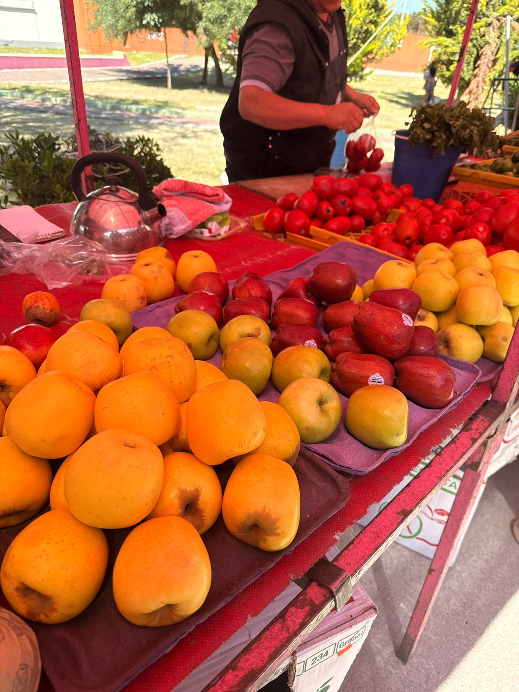
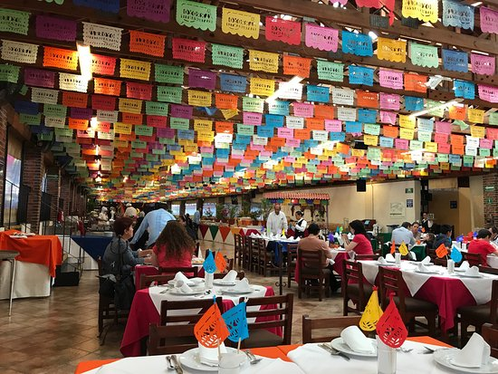

Introducción
La gastronomía mexicana no solo es una parte importante de la cultura del país, sino también un factor clave dentro de la economía nacional. Desde los mercados tradicionales hasta los restaurantes de lujo, la comida mexicana genera millones de empleos y atrae turismo de todo el mundo. Además, los ingredientes típicos como el maíz, el chile o el frijol forman parte de cadenas productivas que sostienen a miles de familias.
Reconocimiento UNESCO
La gastronomía mexicana es reconocida como Patrimonio Cultural Inmaterial de la Humanidad por la UNESCO desde 2010, lo que aumentó el interés internacional por la comida del país. Este reconocimiento impulsó el turismo gastronómico y fortaleció a pequeños productores, cocineras tradicionales y empresas relacionadas con la preparación de alimentos.
Sectores económicos
La economía mexicana se ve beneficiada principalmente por tres sectores ligados a la gastronomía: el agrícola, el turístico y el comercial. En el ámbito agrícola, la producción de ingredientes como el maíz, el aguacate, el cacao y el chile genera exportaciones importantes y empleo en comunidades rurales. Por ejemplo, México es el principal exportador de aguacate en el mundo, y gran parte de esa producción está relacionada con platillos típicos como el guacamole.


Turismo gastronómico
El turismo gastronómico también representa una fuente importante de ingresos. Muchos visitantes extranjeros viajan para probar platillos típicos como los tacos, el mole o los tamales, lo que favorece a restaurantes, hoteles, guías y transportistas. Además, en ciudades como Oaxaca, Puebla o Yucatán, la gastronomía es parte fundamental de su identidad económica.
MiPyMEs gastronómicas
Otro aspecto económico relevante es la creación de micro, pequeñas y medianas empresas (MiPyMEs) que giran en torno a la venta de alimentos. Desde fondas familiares hasta franquicias internacionales, la comida mexicana ha demostrado ser una inversión rentable. Durante los últimos años, incluso plataformas digitales de entrega de comida han impulsado el consumo local, ayudando a que la gastronomía siga generando empleo.
Conclusión
En conclusión, la gastronomía mexicana es mucho más que sabor y tradición: representa una fuente de ingresos, desarrollo y oportunidades para millones de personas. Su relación con la economía es tan fuerte que impulsa al país en áreas como el turismo, la agricultura y el comercio. Además, su expansión internacional muestra que la comida mexicana puede competir en mercados globales sin perder su esencia. Cuidar y fortalecer la gastronomía nacional es, por tanto, una manera de fortalecer también la economía mexicana.